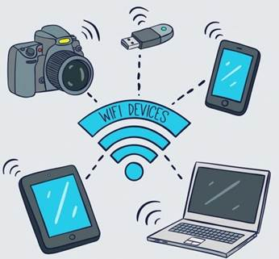

Actualmente, los dispositivos de comunicación son parte fundamental de nuestra vida cotidiana, permitiéndonos interactuar con el mundo de una manera más eficiente y cómoda. Desde los teléfonos móviles hasta los ordenadores portátiles, estos dispositivos nos mantienen conectados con nuestros amigos, familiares y colegas en todo momento.
Un dispositivo de comunicación es cualquier herramienta o instrumento que se usa para transmitir información de una persona a otra. Estos dispositivos pueden ser simples, como una línea telefónica, o más complejos como un ordenador o una tableta, pero todos tienen en común el hecho de que permiten la comunicación de manera remota.
Uno de los dispositivos de comunicación más utilizados son los teléfonos móviles. Estos dispositivos nos permiten realizar llamadas, enviar mensajes de texto, acceder a Internet y muchas otras cosas más, todo ello desde cualquier lugar y en cualquier momento. Además, los teléfonos móviles son cada vez más sofisticados, incluyendo cámaras de alta calidad, GPS y otras características avanzadas.
Otro dispositivo de comunicación importante es el ordenador. Los ordenadores nos permiten acceder a Internet y enviar correos electrónicos, permitiendo una comunicación más rápida y efectiva. Además, los ordenadores son más versátiles que los teléfonos móviles, permitiéndonos acceder a una amplia variedad de programas y aplicaciones.
Las tabletas también se han convertido en dispositivos de comunicación populares en los últimos años. Estos dispositivos son similares a los ordenadores, pero más portátiles y fáciles de usar. Las tabletas nos permiten acceder a Internet, enviar correos electrónicos y utilizar una amplia variedad de aplicaciones, lo que las convierte en una excelente herramienta para la comunicación.
Otro dispositivo de comunicación ampliamente utilizado son los auriculares y los altavoces que nos permiten escuchar música, ver películas o realizar videollamadas. Los auriculares y los altavoces pueden ser conectados a una amplia variedad de dispositivos, como teléfonos móviles, ordenadores o tabletas, proporcionando un sonido de alta calidad y una experiencia de entretenimiento inmersiva.
Además, existen dispositivos de comunicación específicos para el entorno laboral, como los sistemas de audio y videoconferencia, que nos permiten realizar reuniones y discusiones con colegas de todo el mundo sin tener que viajar. Estos sistemas son cada vez más sofisticados, incluyendo cámaras de alta definición, micrófonos sensibles y software de colaboración en tiempo real.
Por otro lado, los dispositivos de comunicación también nos permiten conectarnos con nuestras casas y hogares. Los sistemas de seguridad domésticos, las cerraduras inteligentes y los termostatos inteligentes, por ejemplo, nos permiten controlar y monitorear nuestras casas desde cualquier lugar del mundo, proporcionando una tranquilidad y seguridad extra para los propietarios de casas y departamentos.
Los dispositivos de comunicación también pueden ser personalizados de manera muy específica para cubrir las necesidades individuales de cada usuario. Por ejemplo, existen aplicaciones que facilitan a los discapacitados visuales el acceso a la comunicación escrita, permitiéndoles realizar lecturas a través de sintetizadores de voz o pantallas especiales. De manera similar, existen aplicaciones y software especializados para aprender diversos idiomas, facilitando la comunicación intercultural.
Sin embargo, es importante tener en cuenta que la comunicación a través de dispositivos no siempre es perfecta y presenta desafíos en la privacidad y la seguridad. Los dispositivos de comunicación pueden ser vulnerables a los ataques de hackers, y la información personal transmitida a través de estos dispositivos puede ser comprometida. Por esta razón, es importante que los usuarios de dispositivos de comunicación estén al tanto de las medidas de seguridad cibernética necesarias para proteger su información.
Los dispositivos de comunicación se han convertido en una parte indispensable de nuestras vidas. Desde los teléfonos móviles hasta los ordenadores y las tabletas, cada dispositivo nos permite conectarnos de manera más fácil y eficiente con el resto del mundo. Al mismo tiempo, es importante tener en cuenta los desafíos en la seguridad y privacidad de la información que conllevan el uso de estos dispositivos. Pero sin duda, su uso correcto representa una mejora significativa en la calidad de vida de las personas a nivel personal, social y laboral.